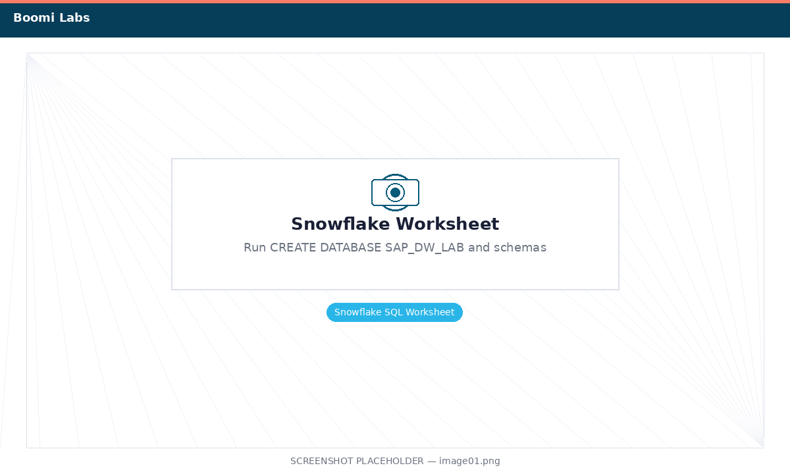
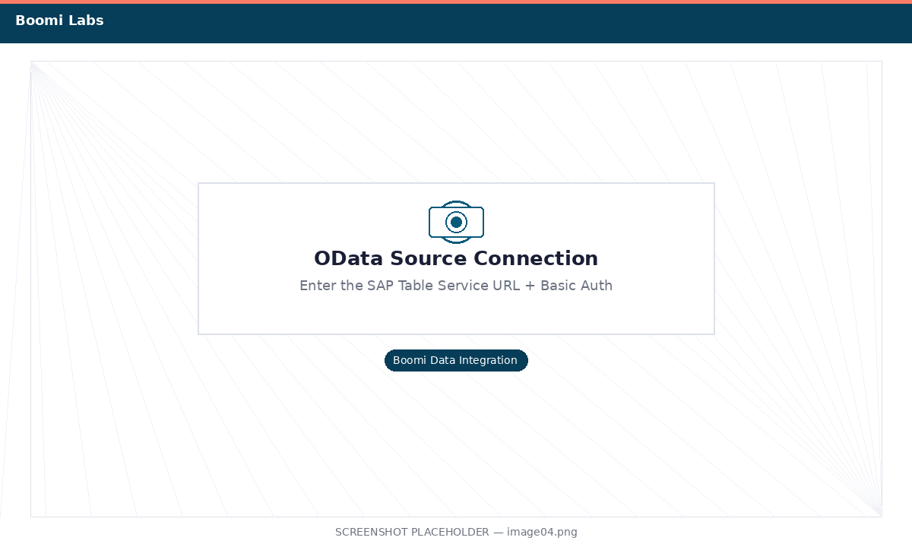
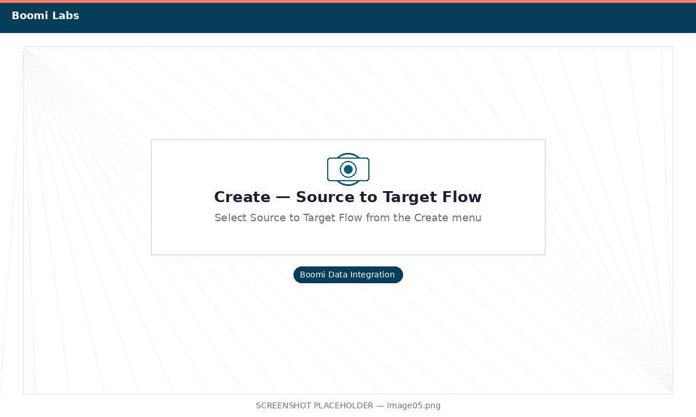
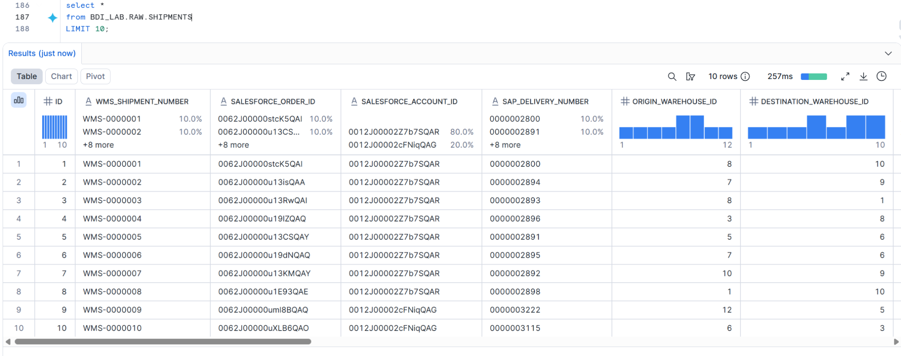
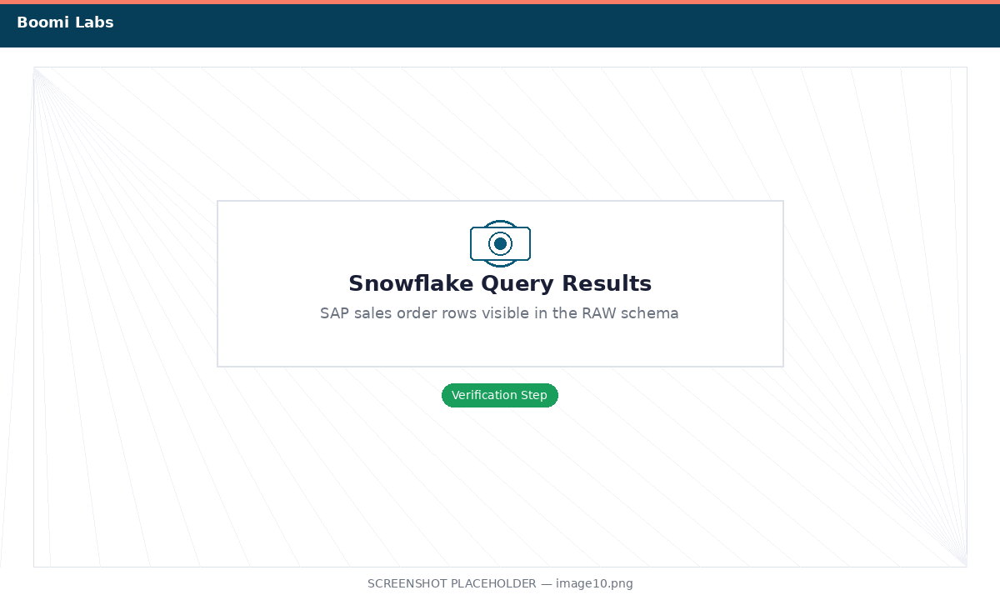

Extract SAP Data into Snowflake
Use Boomi Data Integration to pull your Table Service data into a Snowflake RAW schema.
What you'll do
In Exercise 1 you created a Table Service that exposes SAP sales orders as a clean, queryable feed. Now you'll connect Boomi Data Integration (BDI) to that feed as a source, point it at a new Snowflake database as a target, and run an initial full load. BDI will automatically create the target table in Snowflake — no DDL required.
- How to provision a Snowflake trial account and create a target database
- How to create a Snowflake connection in BDI
- How to connect BDI to a Boomi for SAP Table Service as an OData source
- How to configure and run a BDI Source-to-Target flow
- How to verify loaded data directly in Snowflake
Set Up Your Snowflake Target
Create the database and schemas that will hold the SAP data warehouse.
-
1
Go to signup.snowflake.com and create a free 30-day trial. Choose the Standard tier and AWS as the cloud provider. Select the region closest to you.
New to Snowflake? Follow the step-by-step Snowflake trial signup guide for a full walkthrough with screenshots.
-
2
Log in to your new Snowflake account. Open a Worksheet and run the following SQL to create the target database and two schemas — one for raw SAP data and one for the transformed data warehouse.
-- Create the lab database CREATE DATABASE SAP_DW_LAB; -- RAW schema: landing zone for data from SAP CREATE SCHEMA SAP_DW_LAB.RAW; -- DW schema: transformed, analytics-ready tables (used in Exercise 3) CREATE SCHEMA SAP_DW_LAB.DW;
Run all three statements — you should see "Statement executed successfully" for each -
3
Note your Snowflake Account Identifier. You can find it under Admin → Accounts, or it appears in your browser URL as
<org>-<account>.snowflakecomputing.com. You'll need this for the BDI connection in the next step.
Connect Boomi Data Integration to Snowflake
Add your Snowflake account as a target connection in BDI.
-
1
Log in to Boomi Data Integration at console.rivery.io using the credentials provided by your trainer.
-
2
In the left sidebar, go to Connections and click + New Connection.

Click + New Connection -
3
Search for Snowflake and select it. Fill in the fields below, then click Test Connection.
Field Value Connection Name Snowflake_SAP_DWAccount Your account identifier (e.g., myorg-myaccount)Username Your Snowflake username Password Your Snowflake password Warehouse COMPUTE_WHDatabase SAP_DW_LAB
Fill in your Snowflake connection details and click Test Connection -
4
When the test returns a green Connection Successful message, click Save.
Add the SAP Table Service as a Source
Register your Exercise 1 Table Service as an OData connection in BDI.
-
1
In BDI, go back to Connections → + New Connection. Search for OData (or Boomi for SAP if available as a native connector) and select it.
-
2
Fill in the connection details using the OData URL you copied at the end of Exercise 1.
Field Value Connection Name SAP_Table_Service_XX(replace XX)Base URL The OData URL from Exercise 1 Authentication Basic Auth Username BOOMI_WRKSHPPassword Welcome1
Enter the SAP Table Service OData URL and basic auth credentials -
3
Click Test Connection. A successful test confirms BDI can reach your SAP Table Service. Click Save.
Create the Source-to-Target Flow
Wire SAP as the source and Snowflake RAW as the target in a BDI flow.
-
1
In the BDI left sidebar, click Create and choose Source to Target Flow.

Select Source to Target Flow from the Create menu -
2
On the Source tab, select the
SAP_Table_Service_XXconnection you just created. BDI will load the available entities — you should seeSALES_ORDER_DW_XX(the Table Service from Exercise 1). Select it.
Select the SALES_ORDER_DW_XX entity as your source -
3
Switch to the Target tab. Select the
Snowflake_SAP_DWconnection. Under Data Loading Settings, set:Database SAP_DW_LABSchema RAWTable Name SAP_SALES_ORDERS_RAW
Configure the Snowflake target: SAP_DW_LAB.RAW.SAP_SALES_ORDERS_RAW -
4
Go to Schedule & Settings. Set Schedule to OFF (we'll run manually). Name the flow
sap-to-snowflake-raw-XXand click Save.
Run the Flow and Verify in Snowflake
Trigger the initial load and confirm the SAP data has landed in Snowflake.
-
1
Click Activate in the bottom-right corner of the flow editor. Wait for BDI to confirm activation.

Click Activate to enable the flow -
2
Click Run Data Flow. Open the live run tree by clicking the monitor icon on the right. Watch the rows load — when you see a green checkmark and a row count next to
SAP_SALES_ORDERS_RAW, the load is complete.
A green checkmark and row count confirm a successful load -
3
Switch to your Snowflake tab. Open a Worksheet and run the query below to verify the data arrived correctly.
SELECT VBELN AS order_number, ERDAT AS order_date, KUNNR AS customer_id, NETWR AS net_value, WAERK AS currency, MATNR AS material_number, ARKTX AS item_description, KWMENG AS quantity, KMEIN AS unit FROM SAP_DW_LAB.RAW.SAP_SALES_ORDERS_RAW LIMIT 20;
You should see SAP sales order rows in Snowflake Exercise 2 complete! SAP sales order data is now in Snowflake. In Exercise 3 you'll transform it into structured fact and dimension tables.